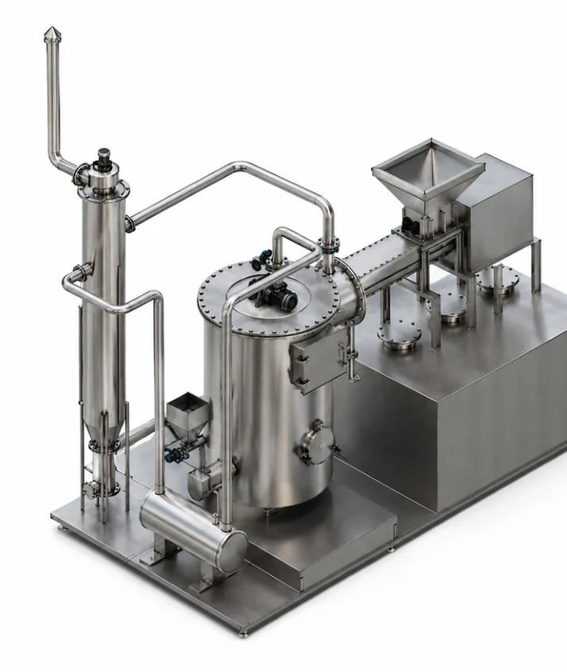
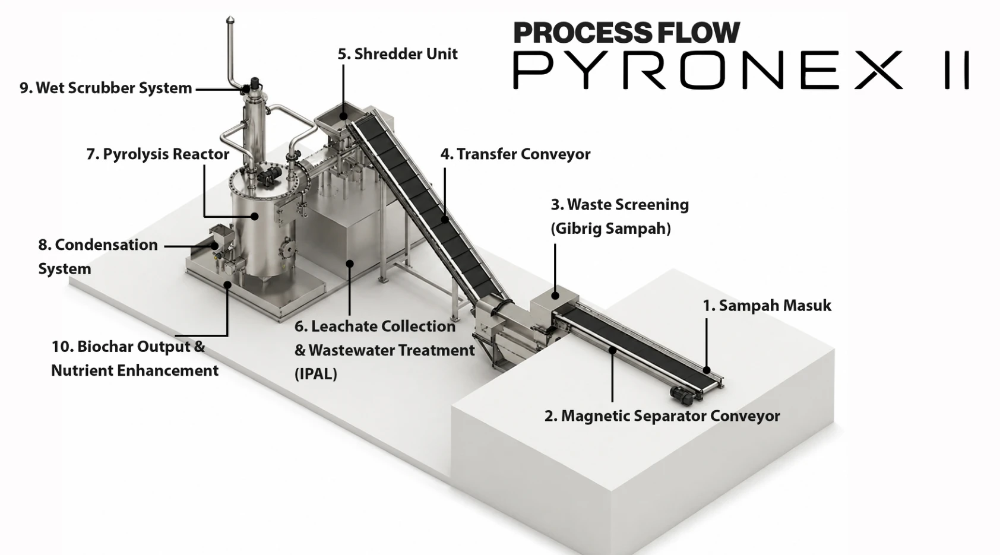

Biochar
Produk karbon dari proses pirolisis. Potensi pemanfaatannya perlu ditetapkan berdasarkan hasil uji kualitas dan keamanan, termasuk sebelum penggunaan pada tanah atau pertanian.
PYRONEX / MESIN PENGOLAH SAMPAH PIROLISIS
Pyronex II adalah sistem pengolahan sampah terintegrasi yang memadukan persiapan material dan pirolisis terkendali. Dirancang untuk membantu fasilitas lokal mengolah fraksi sesuai spesifikasi lebih dekat ke sumbernya.
Kenali sistem PyronexPirolisis terkendali
Rangkaian pengolahan terintegrasi

Dari titik pengumpulan
menjadi tempat pengolahan.
Mesin pirolisis sampah Pyronex ditujukan untuk pengelola TPS3R, kawasan, dan pemerintah daerah. Rencana penerapan dimulai dengan mencocokkan karakter input, kebutuhan kapasitas, kesiapan fasilitas, dan jalur keluaran.
01 / TEKNOLOGI
Pirolisis menguraikan material melalui pemanasan dengan oksigen terbatas. Pada mesin pengolah sampah Pyronex, proses dimulai dari penyiapan input yang sesuai.
Rangkaian Pyronex II mencakup conveyor dan pemisah magnet, screening, pencacahan serta pemerasan, reaktor pirolisis, kondensasi, wet scrubber, dan pengelolaan cairan. Komposisi serta kondisi material yang diterima perlu diperiksa sebelum menetapkan konfigurasi.
Konfigurasi akhir, kebutuhan energi, dan hasil proses mengikuti spesifikasi yang disepakati serta pengujian di lokasi.
02 / RANGKAIAN PYRONEX II
Mulai dari penerimaan sampah sampai pencatatan hasil. Setiap fraksi diarahkan ke proses yang sesuai.

Periksa input, pulihkan material daur ulang, lalu pisahkan fraksi melalui conveyor, magnet, dan screening.
Fraksi organik yang sesuai dicacah dan diperas. Cairan hasil proses diarahkan ke pengolahan air limbah.
Material masuk ke tahap pirolisis dengan kontrol temperatur, sistem kondensasi, dan wet scrubber.
Keluaran ditimbang dan diuji. Pemanfaatan produk ditentukan dari mutu dan kebutuhan pengguna akhir.
03 / KELUARAN MATERIAL
Pemanfaatan keluaran mengikuti karakter bahan masuk, hasil uji, serta spesifikasi penerima produk.
Produk karbon dari proses pirolisis. Potensi pemanfaatannya perlu ditetapkan berdasarkan hasil uji kualitas dan keamanan, termasuk sebelum penggunaan pada tanah atau pertanian.
Material bernilai dipulihkan pada tahap pemilahan dan disalurkan melalui jalur daur ulang yang sesuai.
Fraksi yang sesuai dapat diarahkan ke persiapan RDF. Material di luar spesifikasi dan sisa proses tetap memerlukan penanganan tersendiri.
04 / PILIHAN KONFIGURASI
Materi penawaran Pyronex memuat pilihan kapasitas berikut. Gunakan sebagai titik awal diskusi teknis, lalu verifikasi berdasarkan komposisi input dan kondisi lokasi.
Sumber: materi “Solusi Pengolahan Sampah Terdesentralisasi”, April 2026. Kapasitas adalah acuan penawaran, bukan jaminan hasil operasi. Area di atas belum mencakup seluruh kebutuhan fasilitas, penyimpanan, dan akses kerja.
05 / PERSIAPAN PENERAPAN
Sebelum menentukan unit, petakan kebutuhan pengolahan bersama tim.
06 / PERTANYAAN TEKNIS
Jawaban awal untuk menilai kecocokan proses dan kebutuhan lokasi.
Pyronex II adalah rancangan sistem pengolahan terintegrasi. Rangkaiannya menyiapkan dan memisahkan material, lalu memproses fraksi yang sesuai melalui pirolisis terkendali. Sistem juga mencakup kondensasi, wet scrubber, serta pengelolaan cairan dan keluaran.
Materi produk menyebut sampah rumah tangga dan komersial campuran sebagai sasaran penerapan. Kondisi dan komposisi aktual harus diperiksa untuk memastikan spesifikasi input. Limbah berbahaya tidak termasuk input; material di luar spesifikasi memerlukan jalur terpisah.
Fraksi organik yang memenuhi spesifikasi ditujukan untuk proses pirolisis dan menghasilkan biochar yang perlu diuji sebelum pemanfaatan. Material daur ulang dipulihkan pada tahap pemilahan. Fraksi anorganik yang sesuai dapat disiapkan menjadi RDF, bergantung pada persyaratan dan jalur penerima.
Materi konfigurasi mencantumkan pilihan 1, 2, 4, dan 8 ton per hari dengan acuan operasi 8 jam. Angka ini adalah pilihan teknis indikatif. Kapasitas efektif dipengaruhi jenis dan kondisi input, konfigurasi, utilitas, jam operasi, instalasi, dan hasil commissioning.
Tidak. Halaman ini menjelaskan konfigurasi dan prinsip proses, bukan jaminan kinerja di semua lokasi. Hasil, mutu produk, emisi, residu, dan kepatuhan perlu dibuktikan lewat spesifikasi final, persetujuan yang berlaku, commissioning, pengujian, dan pencatatan operasi di lokasi penerapan.
MULAI DARI KEBUTUHAN LOKASI ANDA
Sampaikan lokasi, perkiraan volume harian, dan jenis sampah. Tim Kibar akan membantu pembahasan awal kebutuhan sistem Pyronex.
Diskusi melalui WhatsApp kibarlaksanab@gmail.comPT Kibar Laksana Bintang
+62 812 3644 0576